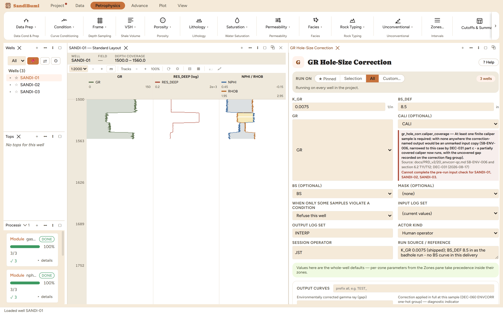

Linear borehole-enlargement correction for the gamma-ray log: counts attenuated by the extra mud annulus in an oversize hole are restored in proportion to the enlargement.
GR_EC = GR·(1 + K_GR·(CALI − BS)) BS from the BS curve where present, else BS_DEF
Gamma rays crossing an extra annulus of mud are attenuated, so a washed-out hole reads GR low, and a low GR in a washout looks like sand. The correction is linear in the enlargement: GR_EC = GR·(1 + K_GR·(CALI − BS)).
K_GR 0.0075 (shipped) and BS_DEF 8.5 in: no BS curve in this delivery, the same bit-size argument as the bad-hole run. One contract to know: the run refuses if CALI is missing at any finite GR sample. It will never write an unmarked, uncorrected copy under the corrected name, because a GR_EC that is secretly raw GR is unfalsifiable downstream.

On these wells: 3 clean. 615 samples corrected upward (the washout intervals) by +1.46 gAPI on average, +1.8 at most. Small numbers, deliberately: a linear starting coefficient on a two-and-a-half-inch washout. The shape is what matters: the sand that a washout was dressing as cleaner than it is gets its shale back.
Everything below is generated from the same manifest the application builds this module’s pane from — descriptions, defaults, sources, ranges and pre-run checks here are exactly what the running application enforces.
GR_EC = GR * (1 + K_GR*(CALI - BS)): linear borehole-enlargement correction — gamma rays attenuated by the extra mud annulus are restored. Bit size from the BS curve where present, else BS_DEF. The public runner refuses if CALI is missing at any finite GR sample; it never writes an unmarked uncorrected GR_EC copy.
| Role | Description | Resolves to | Required | Notes |
|---|---|---|---|---|
| GR | Gamma ray log | GR | yes | — |
| CALI | Caliper log | CALI | no | — |
| BS | Bit size log | BS | no | — |
Whole-well defaults; per-zone values from the Zones pane take precedence inside their zones (except where a parameter is marked one-value-per-well).
Correction per inch of enlargement
Bit size when BS curve is absent
| Name | Description |
|---|---|
| GR_EC | Environmentally corrected gamma ray |
| GR_EC_FULL | Correction applied in full at this sample (DEC-060 ENVCORR one-hot group) (flag: DIAGNOSTIC_INDICATOR) |
| GR_EC_PARTIAL | Correction applied in part at this sample (DEC-060 ENVCORR one-hot group) (flag: DIAGNOSTIC_INDICATOR) |
| GR_EC_NONE | Correction not applied at this sample - the raw value passed through under the corrected name (DEC-060 ENVCORR one-hot group) (flag: DIAGNOSTIC_INDICATOR) |
| GR_EC_REFUSED | Refused on a precondition at this sample (DEC-060 ENVCORR one-hot group; refusals today are whole-run and carry no outputs, so 0 wherever sampled) (flag: DIAGNOSTIC_INDICATOR) |